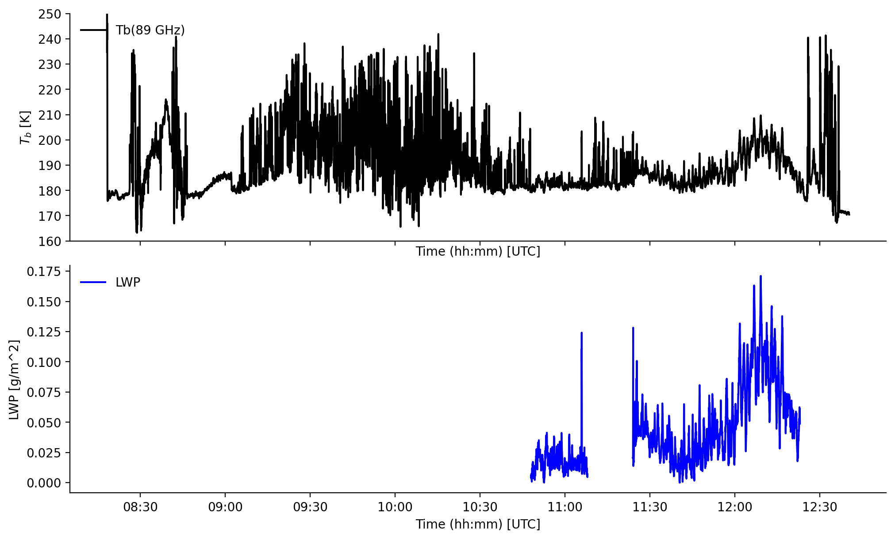

MiRAC-A#
The following example demonstrates the use of MiRAC-A data collected during ACLOUD, AFLUX, and MOSAiC-ACA. The Microwave Radar/Radiometer for Arctic Clouds (MiRAC) consists of an active component, a 94 GHz Frequency Modulated Continuous Wave (FMCW) cloud radar, and a passive 89 GHz microwave radiometer. MiRAC-A is mounted on Polar 5 with a fixed viewing angle of 25° against flight direction.
More information on the instrument can be found in Mech et al. (2019).
In addition, the liquid water path product over open ocean derived from the passive channel during the ACLOUD campaign Kliesch et al. (2021) is included.
If you have questions or if you would like to use the data for a publication, please don’t hesitate to get in contact with the dataset authors as stated in the dataset attributes contact or author.
Data access#
Some of the data, like the preliminary data of the HALO-(AC)3 campaign, is stored on the (AC)3 nextcloud server. This requires username and password as credentials (registration) that need to be loaded from environment variables
import os
from dotenv import load_dotenv
load_dotenv()
# local caching
kwds = {'simplecache': dict(
cache_storage=os.environ['INTAKE_CACHE'],
same_names=True
)}
To analyse the data they first have to be loaded by importing the (AC)3 airborne meta data catalogue. To do so the ac3airborne package has to be installed. More information on how to do that and about the catalog can be found here.
import ac3airborne
cat = ac3airborne.get_intake_catalog()
datasets = []
for campaign in ['ACLOUD', 'AFLUX', 'MOSAiC-ACA','HALO-AC3','COMPEX-EC']:
datasets.extend(list(cat[campaign]['P5']['MiRAC-A']))
datasets.extend(list(cat['HAMAG']['P6']['MiRAC-A']))
datasets
['ACLOUD_P5_RF04',
'ACLOUD_P5_RF05',
'ACLOUD_P5_RF06',
'ACLOUD_P5_RF07',
'ACLOUD_P5_RF08',
'ACLOUD_P5_RF10',
'ACLOUD_P5_RF11',
'ACLOUD_P5_RF14',
'ACLOUD_P5_RF15',
'ACLOUD_P5_RF16',
'ACLOUD_P5_RF17',
'ACLOUD_P5_RF18',
'ACLOUD_P5_RF19',
'ACLOUD_P5_RF20',
'ACLOUD_P5_RF21',
'ACLOUD_P5_RF22',
'ACLOUD_P5_RF23',
'ACLOUD_P5_RF25',
'AFLUX_P5_RF03',
'AFLUX_P5_RF04',
'AFLUX_P5_RF05',
'AFLUX_P5_RF06',
'AFLUX_P5_RF07',
'AFLUX_P5_RF08',
'AFLUX_P5_RF09',
'AFLUX_P5_RF10',
'AFLUX_P5_RF11',
'AFLUX_P5_RF12',
'AFLUX_P5_RF13',
'AFLUX_P5_RF14',
'AFLUX_P5_RF15',
'MOSAiC-ACA_P5_RF05',
'MOSAiC-ACA_P5_RF06',
'MOSAiC-ACA_P5_RF07',
'MOSAiC-ACA_P5_RF08',
'MOSAiC-ACA_P5_RF09',
'MOSAiC-ACA_P5_RF10',
'MOSAiC-ACA_P5_RF11',
'HALO-AC3_P5_RF01',
'HALO-AC3_P5_RF03',
'HALO-AC3_P5_RF04',
'HALO-AC3_P5_RF05',
'HALO-AC3_P5_RF07',
'HALO-AC3_P5_RF08',
'HALO-AC3_P5_RF09',
'HALO-AC3_P5_RF10',
'HALO-AC3_P5_RF11',
'HALO-AC3_P5_RF12',
'HALO-AC3_P5_RF13',
'COMPEX-EC_P5_RF00',
'COMPEX-EC_P5_RF01',
'COMPEX-EC_P5_RF02',
'COMPEX-EC_P5_RF03',
'COMPEX-EC_P5_RF04',
'COMPEX-EC_P5_RF05',
'COMPEX-EC_P5_RF06',
'COMPEX-EC_P5_RF07',
'HAMAG_P6_RF01',
'HAMAG_P6_RF02',
'HAMAG_P6_RF03',
'HAMAG_P6_RF04',
'HAMAG_P6_RF05',
'HAMAG_P6_RF06']
From here on, we work on a specific flight from the ACLOUD campaign ACLOUD_P5_RF05.
flight = 'ACLOUD_P5_RF05'
campaign, platform, rf = flight.split('_')
Note
Have a look at the attributes of the xarray dataset ds_mirac_a for all relevant information on the dataset, such as author, contact, or citation information.
ds_mirac_a = cat[campaign][platform]['MiRAC-A'][flight](storage_options=kwds).to_dask()
ds_mirac_a
/net/sever/mech/miniconda3/envs/howtoac3/lib/python3.11/site-packages/intake_xarray/base.py:21: FutureWarning: The return type of `Dataset.dims` will be changed to return a set of dimension names in future, in order to be more consistent with `DataArray.dims`. To access a mapping from dimension names to lengths, please use `Dataset.sizes`.
'dims': dict(self._ds.dims),
<xarray.Dataset> Size: 149MB
Dimensions: (time: 11765, height: 1400)
Coordinates:
* time (time) datetime64[ns] 94kB 2017-05-25T08:18:18 ... 2017-05...
* height (height) float32 6kB -1e+03 -995.0 ... 5.99e+03 5.995e+03
Data variables:
Ze_unfiltered (time, height) float32 66MB ...
Ze (time, height) float32 66MB ...
tb (time) float32 47kB ...
Ze_flag (time, height) uint8 16MB ...
lon (time) float32 47kB ...
lat (time) float32 47kB ...
alt (time) float32 47kB ...
Attributes: (12/15)
title: MiRAC-A observations onboard Polar 5 during ACLOUD
institution: Institute for Geophysics and Meteorology (IGM), University ...
source: airborne observation
history: measured onboard Polar 5 during ACLOUD campaign; processed,...
references: https://doi.org/10.5194/amt-12-5019-2019
comment: the radar system and the 89 GHz channel were inclined by 25...
... ...
platform: Polar 5
flight_id: RF05
instrument: MiRAC-A: Microwave Radar/radiometer for Arctic Clouds (active)
author: Nils Risse
contact: mario.mech@uni-koeln.de, n.risse@uni-koeln.de
created: 2022-07-19The dataset includes the radar reflectivity (Ze, Ze_unfiltered), the radar reflectivity filter mask (Ze_flag), the 89 GHz brightness temperature (TB_89) as well as information on the aircraft’s flight altitude (altitude). The radar reflectivity is defined on a regular time-height grid with corresponding target positions (lat, lon). The full dataset is available on PANGAEA.
Load Polar 5 flight phase information#
Polar 5 flights are divided into segments to easily access start and end times of flight patterns. For more information have a look at the respective github repository.
At first we want to load the flight segments of (AC)³airborne
meta = ac3airborne.get_flight_segments()
The following command lists all flight segments into the dictionary segments
segments = {s.get("segment_id"): {**s, "flight_id": flight["flight_id"]}
for campaign in meta.values()
for platform in campaign.values()
for flight in platform.values()
for s in flight["segments"]
}
In this example we want to look at a high-level segment during ACLOUD RF05
seg = segments[flight + "_hl09"]
Using the start and end times of the segment ACLOUD_P5_RF05_hl09 stored in seg, we slice the MiRAC data to this flight section.
ds_mirac_a_sel = ds_mirac_a.sel(time=slice(seg["start"], seg["end"]))
ds_mirac_a_sel
<xarray.Dataset> Size: 12MB
Dimensions: (time: 981, height: 1400)
Coordinates:
* time (time) datetime64[ns] 8kB 2017-05-25T11:28:15 ... 2017-05-...
* height (height) float32 6kB -1e+03 -995.0 ... 5.99e+03 5.995e+03
Data variables:
Ze_unfiltered (time, height) float32 5MB ...
Ze (time, height) float32 5MB ...
tb (time) float32 4kB ...
Ze_flag (time, height) uint8 1MB ...
lon (time) float32 4kB ...
lat (time) float32 4kB ...
alt (time) float32 4kB ...
Attributes: (12/15)
title: MiRAC-A observations onboard Polar 5 during ACLOUD
institution: Institute for Geophysics and Meteorology (IGM), University ...
source: airborne observation
history: measured onboard Polar 5 during ACLOUD campaign; processed,...
references: https://doi.org/10.5194/amt-12-5019-2019
comment: the radar system and the 89 GHz channel were inclined by 25...
... ...
platform: Polar 5
flight_id: RF05
instrument: MiRAC-A: Microwave Radar/radiometer for Arctic Clouds (active)
author: Nils Risse
contact: mario.mech@uni-koeln.de, n.risse@uni-koeln.de
created: 2022-07-19In polar regions, the surface type is helpful for the interpretation of airborne passive microwave observations, especially near the marginal sea ice zone, as generally a higher emissivity is expected over sea ice compared to open ocean. Therefore, we also load AMSR2 sea ice concentration data along the Polar 5 flight track, which is operationally derived by the University of Bremen.
ds_sea_ice = cat[campaign][platform]['AMSR2_SIC'][flight](storage_options=kwds).to_dask().sel(
time=slice(seg["start"], seg["end"]))
/net/sever/mech/miniconda3/envs/howtoac3/lib/python3.11/site-packages/intake_xarray/base.py:21: FutureWarning: The return type of `Dataset.dims` will be changed to return a set of dimension names in future, in order to be more consistent with `DataArray.dims`. To access a mapping from dimension names to lengths, please use `Dataset.sizes`.
'dims': dict(self._ds.dims),
Plots#
The flight section during ACLOUD RF05 is flown at about 3 km altitude in west-east direction during a cold-air outbreak event perpendicular to the wind field. Clearly one can identify the roll-cloud structure in the radar reflectivity and the 89 GHz brightness temperature.
%matplotlib inline
import matplotlib.pyplot as plt
import matplotlib.dates as mdates
import numpy as np
plt.style.use("../../mplstyle/book")
fig, (ax1, ax2, ax3) = plt.subplots(3, 1, sharex=True, gridspec_kw=dict(height_ratios=(1, 1, 0.1)))
# 1st: plot flight altitude and radar reflectivity
ax1.plot(ds_mirac_a_sel.time, ds_mirac_a_sel.alt*1e-3, label='Flight altitude', color='k')
im = ax1.pcolormesh(ds_mirac_a_sel.time, ds_mirac_a_sel.height*1e-3, 10*np.log10(ds_mirac_a_sel.Ze).T, vmin=-40, vmax=30, cmap='jet', shading='nearest')
fig.colorbar(im, ax=ax1, label='Radar reflectivity [dBz]')
ax1.set_ylim(-0.25, 3.5)
ax1.set_ylabel('Height [km]')
ax1.legend(frameon=False, loc='upper left')
# 2nd: plot 89 GHz TB
ax2.plot(ds_mirac_a_sel.time, ds_mirac_a_sel.tb, label='Tb(89 GHz)', color='k')
ax2.set_ylim(177, 195)
ax2.set_ylabel('$T_b$ [K]')
#ax2.set_xlabel('Time (hh:mm) [UTC]')
ax2.legend(frameon=False, loc='upper left')
#ax2.xaxis.set_major_formatter(mdates.DateFormatter('%H:%M'))
# plot AMSR2 sea ice concentration
im = ax3.pcolormesh(ds_sea_ice.time,
np.array([0, 1]),
np.array([ds_sea_ice.sic,ds_sea_ice.sic]), cmap='Blues_r', vmin=0, vmax=100,
shading='auto')
cax = fig.add_axes([0.9, 0.085, 0.1, ax3.get_position().height])
fig.colorbar(im, cax=cax, orientation='horizontal', label='Sea ice [%]')
ax3.tick_params(axis='y', labelleft=False, left=False)
#ax3.spines[:].set_visible(True)
ax3.spines['top'].set_visible(True)
ax3.spines['right'].set_visible(True)
ax3.xaxis.set_major_formatter(mdates.DateFormatter('%H:%M'))
ax3.set_xlabel('Time (hh:mm) [UTC]')
plt.show()

LWP#
list(cat['ACLOUD']['P5']['MiRAC-A_LWP'])
['ACLOUD_P5_RF05',
'ACLOUD_P5_RF06',
'ACLOUD_P5_RF07',
'ACLOUD_P5_RF11',
'ACLOUD_P5_RF14',
'ACLOUD_P5_RF15',
'ACLOUD_P5_RF16',
'ACLOUD_P5_RF18',
'ACLOUD_P5_RF19',
'ACLOUD_P5_RF20',
'ACLOUD_P5_RF21',
'ACLOUD_P5_RF22']
ds_lwp = cat['ACLOUD']['P5']['MiRAC-A_LWP']['ACLOUD_P5_RF05'].to_dask()
---------------------------------------------------------------------------
ClientResponseError Traceback (most recent call last)
Cell In[15], line 1
----> 1 ds_lwp = cat['ACLOUD']['P5']['MiRAC-A_LWP']['ACLOUD_P5_RF05'].to_dask()
File /net/sever/mech/miniconda3/envs/howtoac3/lib/python3.11/site-packages/intake_xarray/base.py:69, in DataSourceMixin.to_dask(self)
67 def to_dask(self):
68 """Return xarray object where variables are dask arrays"""
---> 69 return self.read_chunked()
File /net/sever/mech/miniconda3/envs/howtoac3/lib/python3.11/site-packages/intake_xarray/base.py:44, in DataSourceMixin.read_chunked(self)
42 def read_chunked(self):
43 """Return xarray object (which will have chunks)"""
---> 44 self._load_metadata()
45 return self._ds
File /net/sever/mech/miniconda3/envs/howtoac3/lib/python3.11/site-packages/intake/source/base.py:236, in DataSourceBase._load_metadata(self)
234 """load metadata only if needed"""
235 if self._schema is None:
--> 236 self._schema = self._get_schema()
237 self.dtype = self._schema.dtype
238 self.shape = self._schema.shape
File /net/sever/mech/miniconda3/envs/howtoac3/lib/python3.11/site-packages/intake_xarray/base.py:18, in DataSourceMixin._get_schema(self)
15 self.urlpath = self._get_cache(self.urlpath)[0]
17 if self._ds is None:
---> 18 self._open_dataset()
20 metadata = {
21 'dims': dict(self._ds.dims),
22 'data_vars': {k: list(self._ds[k].coords)
23 for k in self._ds.data_vars.keys()},
24 'coords': tuple(self._ds.coords.keys()),
25 }
26 if getattr(self, 'on_server', False):
File /net/sever/mech/miniconda3/envs/howtoac3/lib/python3.11/site-packages/intake_xarray/netcdf.py:87, in NetCDFSource._open_dataset(self)
84 _open_dataset = xr.open_dataset
86 if self._can_be_local:
---> 87 url = fsspec.open_local(self.urlpath, **self.storage_options)
88 else:
89 # https://github.com/intake/filesystem_spec/issues/476#issuecomment-732372918
90 url = fsspec.open(self.urlpath, **self.storage_options).open()
File /net/sever/mech/miniconda3/envs/howtoac3/lib/python3.11/site-packages/fsspec/core.py:533, in open_local(url, mode, **storage_options)
528 if not getattr(of[0].fs, "local_file", False):
529 raise ValueError(
530 "open_local can only be used on a filesystem which"
531 " has attribute local_file=True"
532 )
--> 533 with of as files:
534 paths = [f.name for f in files]
535 if (isinstance(url, str) and not has_magic(url)) or isinstance(url, Path):
File /net/sever/mech/miniconda3/envs/howtoac3/lib/python3.11/site-packages/fsspec/core.py:184, in OpenFiles.__enter__(self)
181 while True:
182 if hasattr(fs, "open_many"):
183 # check for concurrent cache download; or set up for upload
--> 184 self.files = fs.open_many(self)
185 return self.files
186 if hasattr(fs, "fs") and fs.fs is not None:
File /net/sever/mech/miniconda3/envs/howtoac3/lib/python3.11/site-packages/fsspec/implementations/cached.py:458, in CachingFileSystem.__getattribute__.<locals>.<lambda>(*args, **kw)
411 def __getattribute__(self, item):
412 if item in {
413 "load_cache",
414 "_open",
(...) 456 # all the methods defined in this class. Note `open` here, since
457 # it calls `_open`, but is actually in superclass
--> 458 return lambda *args, **kw: getattr(type(self), item).__get__(self)(
459 *args, **kw
460 )
461 if item in ["__reduce_ex__"]:
462 raise AttributeError
File /net/sever/mech/miniconda3/envs/howtoac3/lib/python3.11/site-packages/fsspec/implementations/cached.py:567, in WholeFileCacheFileSystem.open_many(self, open_files, **kwargs)
564 downfn = [fn for fn, d in zip(downfn0, details) if not d]
565 if downpath:
566 # skip if all files are already cached and up to date
--> 567 self.fs.get(downpath, downfn)
569 # update metadata - only happens when downloads are successful
570 newdetail = [
571 {
572 "original": path,
(...) 578 for path in downpath
579 ]
File /net/sever/mech/miniconda3/envs/howtoac3/lib/python3.11/site-packages/fsspec/asyn.py:118, in sync_wrapper.<locals>.wrapper(*args, **kwargs)
115 @functools.wraps(func)
116 def wrapper(*args, **kwargs):
117 self = obj or args[0]
--> 118 return sync(self.loop, func, *args, **kwargs)
File /net/sever/mech/miniconda3/envs/howtoac3/lib/python3.11/site-packages/fsspec/asyn.py:103, in sync(loop, func, timeout, *args, **kwargs)
101 raise FSTimeoutError from return_result
102 elif isinstance(return_result, BaseException):
--> 103 raise return_result
104 else:
105 return return_result
File /net/sever/mech/miniconda3/envs/howtoac3/lib/python3.11/site-packages/fsspec/asyn.py:56, in _runner(event, coro, result, timeout)
54 coro = asyncio.wait_for(coro, timeout=timeout)
55 try:
---> 56 result[0] = await coro
57 except Exception as ex:
58 result[0] = ex
File /net/sever/mech/miniconda3/envs/howtoac3/lib/python3.11/site-packages/fsspec/asyn.py:681, in AsyncFileSystem._get(self, rpath, lpath, recursive, callback, maxdepth, **kwargs)
679 get_file = callback.branch_coro(self._get_file)
680 coros.append(get_file(rpath, lpath, **kwargs))
--> 681 return await _run_coros_in_chunks(
682 coros, batch_size=batch_size, callback=callback
683 )
File /net/sever/mech/miniconda3/envs/howtoac3/lib/python3.11/site-packages/fsspec/asyn.py:280, in _run_coros_in_chunks(coros, batch_size, callback, timeout, return_exceptions, nofiles)
278 done, pending = await asyncio.wait(pending, return_when=asyncio.FIRST_COMPLETED)
279 while done:
--> 280 result, k = await done.pop()
281 results[k] = result
283 return results
File /net/sever/mech/miniconda3/envs/howtoac3/lib/python3.11/site-packages/fsspec/asyn.py:257, in _run_coros_in_chunks.<locals>._run_coro(coro, i)
255 async def _run_coro(coro, i):
256 try:
--> 257 return await asyncio.wait_for(coro, timeout=timeout), i
258 except Exception as e:
259 if not return_exceptions:
File /net/sever/mech/miniconda3/envs/howtoac3/lib/python3.11/asyncio/tasks.py:452, in wait_for(fut, timeout)
449 loop = events.get_running_loop()
451 if timeout is None:
--> 452 return await fut
454 if timeout <= 0:
455 fut = ensure_future(fut, loop=loop)
File /net/sever/mech/miniconda3/envs/howtoac3/lib/python3.11/site-packages/fsspec/callbacks.py:81, in Callback.branch_coro.<locals>.func(path1, path2, **kwargs)
78 @wraps(fn)
79 async def func(path1, path2: str, **kwargs):
80 with self.branched(path1, path2, **kwargs) as child:
---> 81 return await fn(path1, path2, callback=child, **kwargs)
File /net/sever/mech/miniconda3/envs/howtoac3/lib/python3.11/site-packages/fsspec/implementations/http.py:253, in HTTPFileSystem._get_file(self, rpath, lpath, chunk_size, callback, **kwargs)
250 size = None
252 callback.set_size(size)
--> 253 self._raise_not_found_for_status(r, rpath)
254 if isfilelike(lpath):
255 outfile = lpath
File /net/sever/mech/miniconda3/envs/howtoac3/lib/python3.11/site-packages/fsspec/implementations/http.py:219, in HTTPFileSystem._raise_not_found_for_status(self, response, url)
217 if response.status == 404:
218 raise FileNotFoundError(url)
--> 219 response.raise_for_status()
File /net/sever/mech/miniconda3/envs/howtoac3/lib/python3.11/site-packages/aiohttp/client_reqrep.py:1161, in ClientResponse.raise_for_status(self)
1158 if not self._in_context:
1159 self.release()
-> 1161 raise ClientResponseError(
1162 self.request_info,
1163 self.history,
1164 status=self.status,
1165 message=self.reason,
1166 headers=self.headers,
1167 )
ClientResponseError: 503, message='Service Unavailable', url='https://download.pangaea.de/dataset/933387/files/ACLOUD_RF05_20170525_liquid_water_path.nc'
ds_lwp
<xarray.Dataset>
Dimensions: (time: 11765)
Coordinates:
* time (time) datetime64[ns] 2017-05-25T08:18:18 ... 2017-05-25T12:...
lat (time) float64 78.25 78.25 78.25 78.25 ... 78.29 78.29 78.29
lon (time) float64 15.42 15.41 15.41 15.41 ... 15.05 15.05 15.05
Data variables:
trajectory |S1 b''
alt (time) float32 150.0 158.2 166.0 180.7 ... 855.4 851.0 846.5
status_flag (time) int32 48 48 48 48 48 48 48 48 ... 32 32 32 32 32 32 32
lwp (time) float32 nan nan nan nan nan nan ... nan nan nan nan nan
Attributes: (12/14)
institution: Institute for Geophysics and Meteorology, University of Col...
contact: l.kliesch@uni-koeln.de, mario.mech@uni-koeln.de
source: Kliesch and Mech (2019, doi: https://doi.org/10.1594/PANGAE...
Conventions: CF-1.7
title: LWP retrieval of MiRAC on Polar 5
variable: liquid water path (LWP)
... ...
campaign: ACLOUD: Arctic CLoud Observations Using airborne measuremen...
keywords: LWP, MiRAC, ACLOUD, Polar 5
featureType: trajectory
history: created: 2021-05-27
author: Leif-Leonard Kliesch
summary: LWP is retrieved nadir over sea-ice-free ocean from the 89 ...fig, (ax1, ax2) = plt.subplots(2, 1, sharex=True)
# 1st: plot 89 GHz TB
ax1.plot(ds_mirac_a.time, ds_mirac_a.tb, label='Tb(89 GHz)', color='k')
ax1.set_ylim(160, 250)
ax1.set_ylabel('$T_b$ [K]')
ax1.set_xlabel('Time (hh:mm) [UTC]')
ax1.legend(frameon=False, loc='upper left')
# 2nd: plot 89 GHz TB
ax2.plot(ds_lwp.time, ds_lwp.lwp, label='LWP', color='b')
#ax2.set_ylim(177, 195)
ax2.set_ylabel('LWP [g/m^2]')
ax2.set_xlabel('Time (hh:mm) [UTC]')
ax2.legend(frameon=False, loc='upper left')
ax2.xaxis.set_major_formatter(mdates.DateFormatter('%H:%M'))
plt.show()
